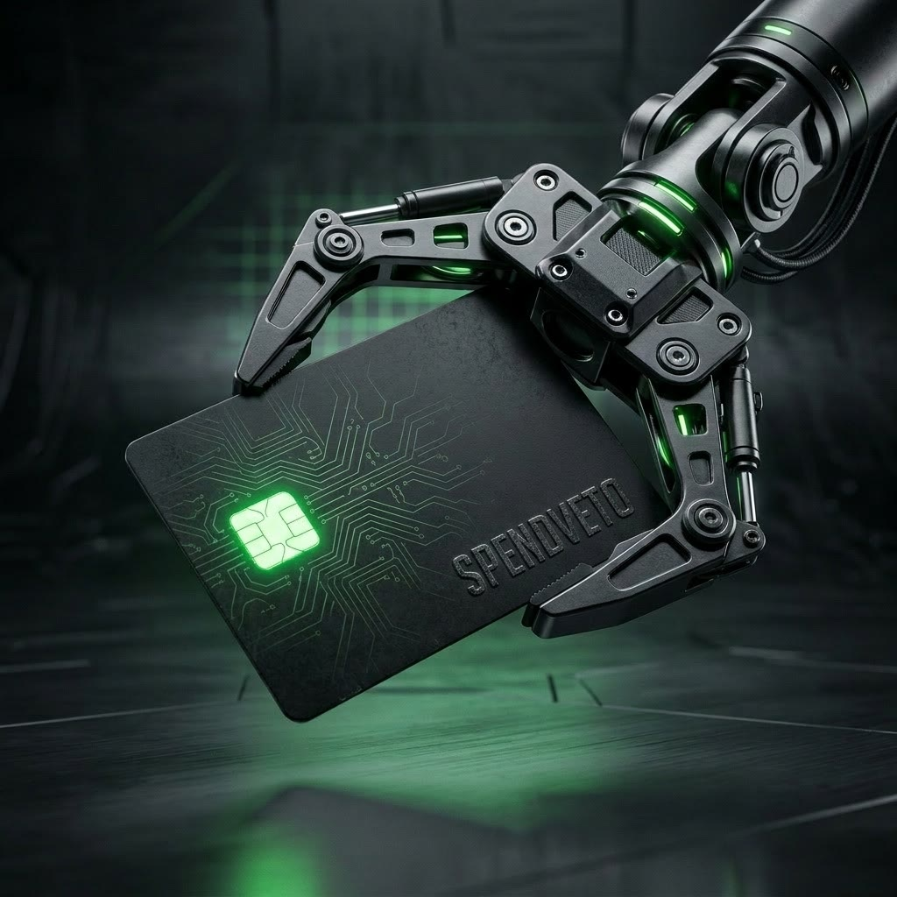
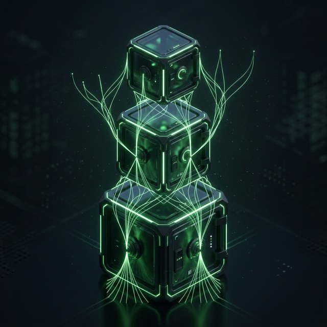
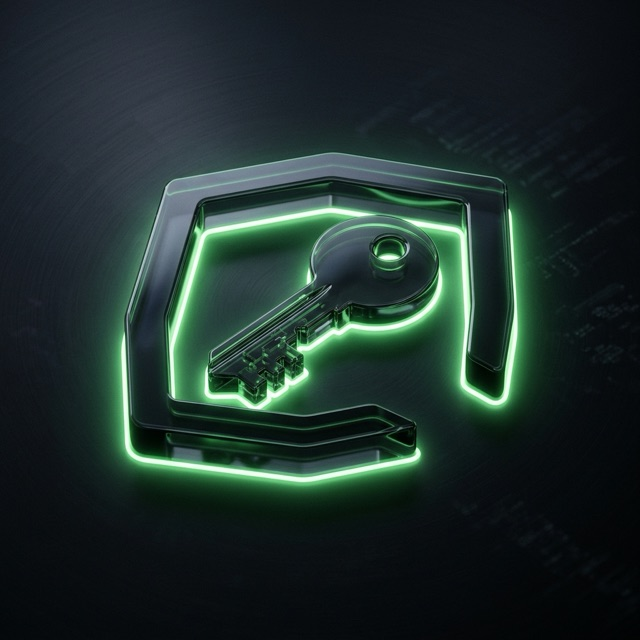
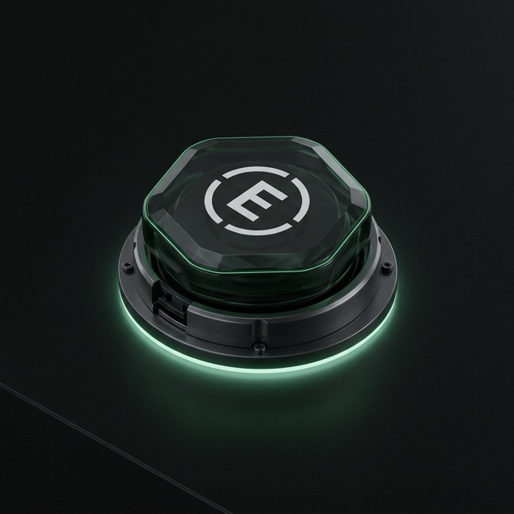
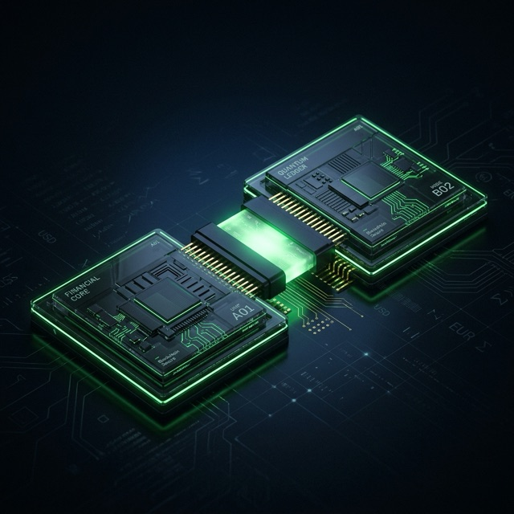
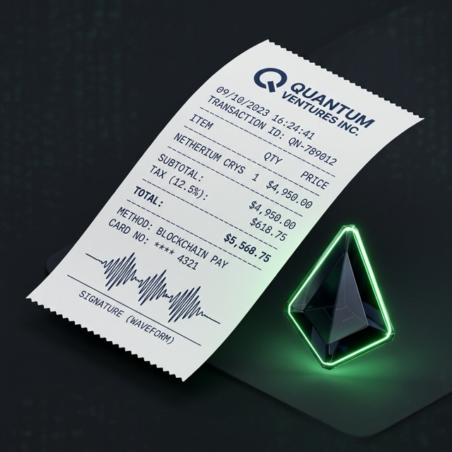
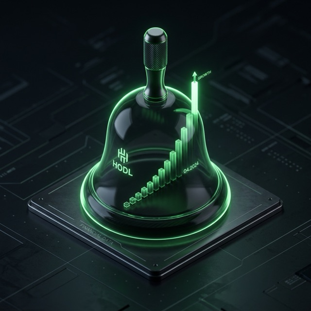

AI agents now pay for tools, APIs, and each other — autonomously, at machine speed. Payment rails move an agent's money; SpendVeto decides whether it should be allowed to move it.
DEMO 65 seconds, no narration to trust — just the product
The playground, the console, the ledger, budget delegation, multi-chain settlement — one continuous run, not slides.
01 / 06 The problem
Every rail answers "how does the agent pay?" Coinbase, Stripe, Visa, Mastercard, Google, Cloudflare — all shipping agent payments in 2026.
Almost nobody answers the question teams ask first: how do I stop it from overspending? Runaway loops don't get tired. They get invoiced.
SpendVeto is the buyer side. The policy layer that sits above every rail — open source, developer-first, plugged into the stack agents already use.
02 / 06 Product — working today, not a roadmap
Every one of them is exercised by a 272-assertion end-to-end verification suite on every change — real payments, real signatures, real JSON-RPC. Nothing below is a mockup.
Per-call caps, hourly budgets, rate limits — the agent's own rules, checked against live spend history before it signs anything.
Spends above your threshold pause for a real Approve / Deny. No answer in 30 seconds? It fails closed. Nothing moves.

Parents grant capped budgets to children, children to grandchildren. Every ancestor's cap binds its whole subtree — IAM for money.

Grants whitelist which tools an agent may buy and which chains it may settle on — a translator pinned to Base can't quietly buy code review on Polygon.

Freeze any wallet in one click — and wallets bursting past the rate threshold freeze themselves, mid-loop.

Claude sees ordinary tools; every call silently runs policy → approval → payment underneath. Governance the model cannot opt out of.

Every settlement is ECDSA-signed and independently verifiable; the full ledger exports to CSV for accounting.

Freezes, blocks, and approvals hit your webhook in real time; spend rolls up per tool and per wallet — including blocked-spend dollars.
03 / 06 Proof, not promises
Forged signatures rejected. Approvals that fail closed. A synthetic runaway agent frozen mid-burst. A grandchild wallet stopped by its team's cap. An authorization signed for Polygon refused on Arbitrum — the chain lives inside the signature. Agents can even run keyless — the enforcement proxy holds custody and signs only after the pipeline passes. All of it runs headlessly in npm run verify.
04 / 06 How it works
CLI, a delegated child wallet, or Claude through MCP requests a priced tool from the catalog.
Frozen? Over a cap? Outside scope? Past its hourly budget? Blocked — with the reason written to the ledger.
Big spends pause for a real person. Unanswered requests fail closed — an away-from-keyboard afternoon can't cost you.
x402 settles in USDC on the chain the policy allows (simulate mode or Base Sepolia). The response carries a signed receipt naming payer, price, and chain.
05 / 06 The landscape
Rails execute payments. Seller-side tools help merchants charge agents. Expense platforms govern humans. The paying agent itself — the side that holds the wallet — is the empty seat at the table.
| SpendVeto | Payment rails x402 · AP2 · Stripe MPP |
Seller-side tools Cloudflare · Nevermined |
Expense platforms Ramp · Payman · Pleo |
|
|---|---|---|---|---|
| Buyer-side policy for AI agents | ✓ | — | — | partial |
| Approvals that fail closed | ✓ | — | — | human flows |
| Nested agent budgets + tool scoping | ✓ | — | — | — |
| Chain-scoped budgets (multichain governance) | ✓ | — | — | — |
| Runaway auto-freeze / kill switch | ✓ | — | — | — |
| MCP-native (agents' actual stack) | ✓ | — | seller side | — |
| Open source | ✓ Apache-2.0 | protocols | — | — |
| On-chain-enforced settlement (Safe AllowanceModule) | roadmap | — | — | — |
RAILS Governed on twelve chains, six signature families
The chain rides inside every signed authorization — a payment signed for Polygon cannot settle anywhere else — and every wallet keeps a separate balance per chain. Policies and delegated grants pin which chains an agent may settle on. On-chain settlement is live today on six signature schemes: Base Sepolia (secp256k1), Solana devnet (ed25519), Aptos testnet (Move), Stellar testnet, Hedera testnet (account-id addressing), and XRPL mainnet — the one chain here settling real money, in RLUSD rather than USDC. The remaining EVM chains are settlement-ready: the gate asks its configured facilitator what it can settle at boot and brings every supported chain live automatically — multi-chain 402s, per-chain scheme registration, canonical stablecoin addresses all wired (tested against a mock facilitator advertising all twelve). Pointing at a CDP facilitator with an API key and a funded wallet flips its EVM mainnets on with zero code changes.
06 / 06 Why now
agentic-commerce spend projected globally by 2030 — McKinsey. Every dollar needs a spend decision before it moves.
payments cleared by x402 in its first year, across 590,000 buyers and 100,000 sellers — and the seller side is commoditizing monthly.
stablecoin transfer volume in Q1 2026 alone — the settlement layer agents actually use is already at Visa scale.
business spend-management software market by 2032 — built for human spenders. Agents are the next, faster cohort.
RUN IT Quickstart
Simulate mode uses real keypairs and real signature verification — it just settles locally, so you can feel the whole governance loop before funding anything. Flip one env var for real x402 on Base Sepolia.
Prefer code to CLI? A Node SDK and a LangChain adapter ship in the same repo — no separate install.
SDK & LangChain docs →FAQ Straight answers
Real and open source (Apache-2.0). It runs on your machine today: real ECDSA signatures, real x402 settlement on Base Sepolia, and an 272-assertion end-to-end suite (npm run verify) that exercises every claim on this page. The hosted platform — managed custody, orgs, SSO — is a waitlist today, not yet a live product.
Your choice of two trust models, both self-hosted. Library mode: agents hold their own wallets and the governance pipeline runs inside their own call path. Enforcement proxy: agents are keyless — they POST spending intents, and the proxy’s custody wallet signs only after freeze, policy, caps, scopes, and approvals all pass. Keys never leave your machine either way.
All eight registered chains run the full governed pipeline end to end — chain-scoped signatures, per-chain balances, chain allowlists — with settlement simulated locally. On-chain settlement is live on Base Sepolia via x402’s public facilitator; per-chain facilitator adapters are the next funded milestone. Every chain’s canonical USDC contract is already in the registry.
The burst detector freezes it mid-loop — by default, ten payment attempts inside ten seconds trips the freeze automatically. Every wallet also has a one-click manual kill switch. A frozen wallet is refused even when it presents a correctly signed payment (403, not a fresh challenge), and its trust score collapses to an F.
Only the settlement. Keypairs, ECDSA signing and verification, nonce replay protection, signed receipts — all real cryptography; balances just settle in a local file instead of on-chain. Forged signatures are rejected, and that rejection is one of the 272 tested assertions. Flip one env var for real x402 on Base Sepolia.
The parts a company needs to run this for a fleet: a managed custody proxy on the money path, orgs and SSO, a Postgres audit trail, alert routing, and mainnet settlement. Join the waitlist — the chains people pick literally decide which adapters we build first.
Both. A dependency-free Node SDK (sdk/ — .pay(), .dryRun(), .chat(), throws a typed denial with the fix attached) and a LangChain adapter (integrations/) ship in the repo alongside the CLI and MCP server — same governed pipeline underneath all four. Code samples in the docs.
Apache-2.0 Open source